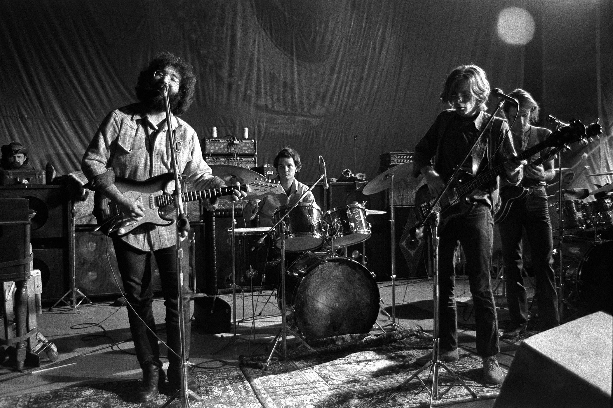
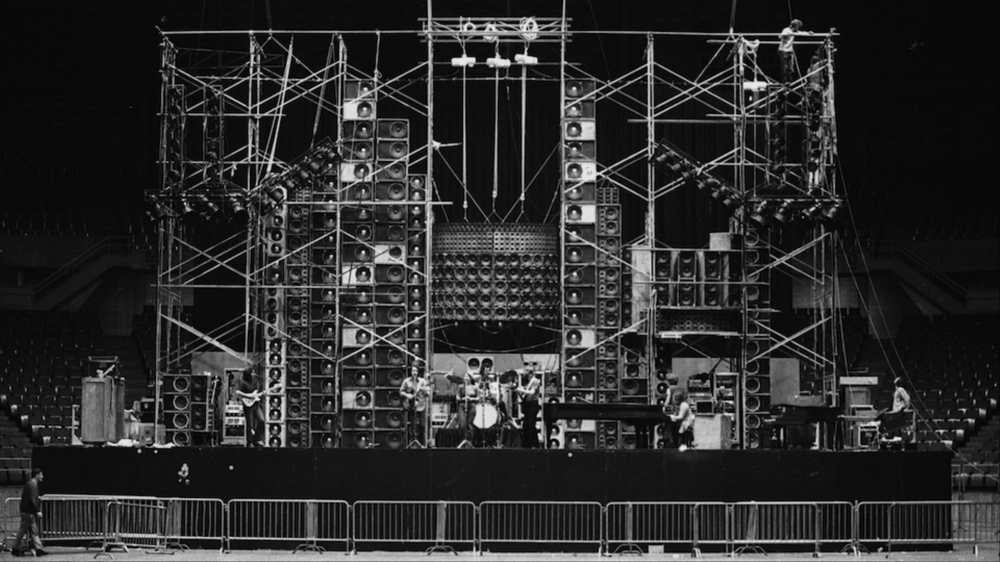

From left: Ron 'Pigpen' McKernan, Jerry Garcia, Bill Kreutzmann, Phil Lesh and Bob Weir (Not pictured: Mickey Hart) perform onstage at The Family Dog in 1970 in San Francisco, Calif. Robert Altman—Getty Images
The Grateful Dead was an American rock band formed in 1965 in Palo Alto, California. The band is known for its eclectic style, which fused elements of rock, folk, country, jazz, bluegrass, blues, gospel, and psychedelic rock; for live performances of lengthy instrumental jams; and for its devoted fan base, known as "Deadheads". "Their music", writes Lenny Kaye, "touches on ground that most other groups don't even know exists." These various influences were distilled into a diverse and psychedelic whole that made the Grateful Dead "the pioneering Godfathers of the jam band world"

Soundcheck, 1974. Featuring the short-lived "Wall of Sound"
The Wall of Sound was the brainchild of audio engineer (and chemist) Owsley “Bear” Stanley, who only sought to make the sound as clear onstage as it did in the studio. The system was massive, made up of over 600 hi-fidelity speakers that sat behind the band as they played. Owsley worked with music company Alembic to find a way to avoid the usual microphone feedback.